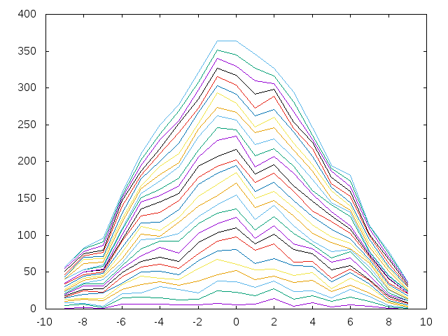

Distribución de diferencias de dígitos consecutivos de pi
Usando la librería Data.Number.CReal, que se instala con
cabal install number
se pueden calcular el número pi con la precisión que se desee. Por ejemplo,
λ> import Data.Number.CReal λ> showCReal 60 pi "3.141592653589793238462643383279502884197169399375105820974945"
importa la librería y calcula el número pi con 60 decimales.
La distribución de las diferencias de los dígitos consecutivos para los 18 primeros n dígitos de pi se calcula como sigue: los primeros 18 dígitos de pi son
3, 1, 4, 1, 5, 9, 2, 6, 5, 3, 5, 8, 9, 7, 9, 3, 2, 3
Las diferencias de sus elementos consecutivos es
2, -3, 3, -4, -4, 7, -4, 1, 2, -2, -3, -1, 2, -2, 6, 1, -1
y la distribución de sus frecuencias en el intervalo [-9,9] es
0, 0, 0, 0, 0, 3, 2, 2, 2, 0, 2, 3, 1, 0, 0, 1, 1, 0, 0
es decir, el desde el -9 a -5 no aparecen, el -4 aparece 3 veces, el -2 aparece 2 veces y así sucesivamente.
Definir las funciones
distribucionDDCpi :: Int -> [Int] graficas :: [Int] -> FilePath -> IO ()
tales que
- (distribucionDDCpi n) es la distribución de las diferencias de los dígitos consecutivos para los primeros n dígitos de pi. Por ejemplo,
λ> distribucionDDCpi 18 [0,0,0,0,0,3,2,2,2,0,2,3,1,0,0,1,1,0,0] λ> distribucionDDCpi 100 [1,2,1,7,7,7,6,5,8,6,7,14,4,9,3,6,4,1,0] λ> distribucionDDCpi 200 [3,6,2,13,14,12,11,12,15,17,15,19,11,17,8,13,9,2,0] λ> distribucionDDCpi 1000 [16,25,23,44,57,61,55,75,92,98,80,88,64,65,42,54,39,14,8] λ> distribucionDDCpi 5000 [67,99,130,196,245,314,361,391,453,468,447,407,377,304,242,221,134,97,47]
- (graficas ns f) dibuja en el fichero f las gráficas de las distribuciones de las diferencias de los dígitos consecutivos para los primeros n dígitos de pi, para n en ns. Por ejemplo, al evaluar (graficas [100,250..4000] "distribucionDDCpi.png" se escribe en el fichero "distribucionDDCpi.png" la siguiente gráfica

Soluciones
import Data.Number.CReal import Graphics.Gnuplot.Simple import Data.Array -- λ> digitosPi 18 -- [3,1,4,1,5,9,2,6,5,3,5,8,9,7,9,3,2,3] digitosPi :: Int -> [Int] digitosPi n = init [read [c] | c <- (x:xs)] where (x:_:xs) = showCReal n pi -- λ> diferenciasConsecutivos (digitosPi 18) -- [2,-3,3,-4,-4,7,-4,1,2,-2,-3,-1,2,-2,6,1,-1] diferenciasConsecutivos :: Num a => [a] -> [a] diferenciasConsecutivos xs = zipWith (-) xs (tail xs) distribucionDDCpi :: Int -> [Int] distribucionDDCpi = distribucion . diferenciasConsecutivos . digitosPi where distribucion xs = elems (accumArray (+) 0 (-9,9) (zip xs (repeat 1))) graficas :: [Int] -> FilePath -> IO () graficas ns f = plotLists [Key Nothing, PNG f] [puntos n | n <- ns] where puntos :: Int -> [(Int,Int)] puntos n = zip [-9..9] (distribucionDDCpi n)